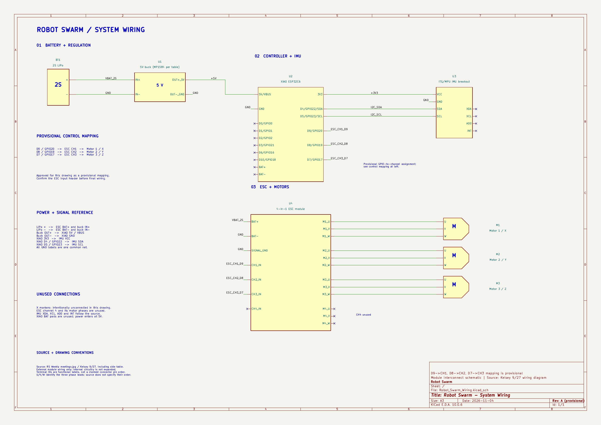

My contribution
01 / 05Connecting the robot’s mechanical design to its behavior in simulation.
- CAD → simulation
- Completed the initial CAD import and parameterized eccentric flywheel cutouts for simulation.
- Experiment design
- Built experiment matrices to study contact friction and bag design. Simulations pointed toward lower ball-to-ball friction and a slick inner lining.
- Hardware & learning
- Researching tracking methods and materials, working on PCB design, and validating a learned MLP controller.
Explore the robot
02 / 05Loading the CAD assembly…
SwarmV2 · Original CAD-to-simulation import · Model geometry from the STEP assembly
Swarm in simulation
03 / 05Electrical architecture
04 / 05A 2S battery supplies the motor controller and a regulated 5 V rail. The XIAO ESP32C6 reads the IMU and commands the three flywheel motors.

From simulation to hardware
05 / 05Testing what
transfers.
The current focus is matching real materials to the friction assumptions in simulation and checking the learned controller. Next, I want to take on more motor control and fabrication of the ball exterior.
The team has demonstrated collective motion in simulation. Hardware validation is ongoing, and obstacle climbing and commanded shape changes remain open research goals.